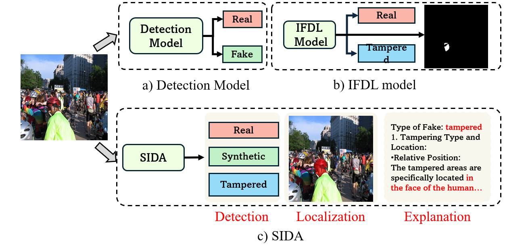

SIDA: Social Media Image Deepfake Detection, Localization and Explanation with Large Multimodal Model
Zhenglin Huang1, Jinwei Hu1, Xiangtai Li2, Yiwei He1, Baoyuan Wu3,
Xiaowei Huang1, Xingyu Zhao4, Bei Peng1, Guangliang Cheng1
1 University of Liverpool, UK, 2 Bytedance, 3 The Chinese University of Hong Kong, Shenzhen, Guangdong, China, 4 WMG, University of Warwick

Existing deepfake methods (a-b) are limited to detection, localization, or both. In contrast, SIDA (c) offers a more comprehensive solution, capable of handling detection, localization, and explanation tasks.
Abstract
The rapid advancement of generative models in creating
highly realistic images poses substantial risks for misinformation dissemination. For instance, a synthetic image,
when shared on social media, can mislead extensive audiences and erode trust in digital content, resulting in severe
repercussions. Despite some progress, academia has not yet
created a large and diversified deepfake detection dataset
for social media, nor has it devised an effective solution to
address this issue. In this paper, we introduce the Social media Image Detection dataSet (SID-Set), which offers three
key advantages: (1) extensive volume, featuring 300K AIgenerated/tampered and authentic images with comprehensive annotations, (2) broad diversity, encompassing fully
synthetic and tampered images across various classes, and
(3) elevated realism, with images that are predominantly indistinguishable from genuine ones through mere visual inspection. Furthermore, leveraging the exceptional capabilities of large multimodal models, we propose a new image
deepfake detection, localization, and explanation framework, named SIDA (Social media Image Detection, localization, and explanation Assistant). SIDA not only discerns
the authenticity of images, but also delineates tampered regions through mask prediction and provides textual explanations of the model’s judgment criteria. Compared with
state-of-the-art deepfake detection models on SID-Set and
other benchmarks, extensive experiments demonstrate that
SIDA achieves superior performance among diversified settings. The code, model, and dataset will be released.